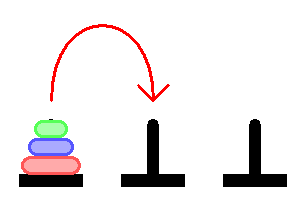

Кулата на Ханой (наричана още "Проблемът на храма в Бенарес", "Кулата на Брахма" или "Кулата на Лукас", а понякога и "Кули", или просто "пирамидален пъзел") е математическа игра или пъзел, състоящ се от три пръчки и няколко диска с различен диаметър, които могат да се плъзгат върху всяка пръчка. Пъзелът започва с дискове, подредени върху една пръчка в низходящ ред, като най-малкият е най-отгоре, като по този начин се доближава до конична форма. Целта на пъзела е да преместите цялата купчина до последната пръчка, като спазвате следните правила:
С 3 диска пъзелът може да бъде решен със 7 хода. Минималният брой ходове, необходими за решаване на пъзел "Кулата на Ханой", е 2n - 1, където n е броят на дисковете.
Пъзелът е представен на Запад от френския математик Едуар Лукас през 1883 г. Почти веднага се появяват многобройни митове за древния и мистичен характер на пъзела, включително един за индийски храм в Каши Вишванат, в който има голяма стая с три изтъркани от времето стълба, заобиколени от 64 златни диска. Изпълнявайки заповедта на древно пророчество, оттогава браминските жреци преместват тези дискове в съответствие с неизменните правила на Брахма. Затова пъзелът е известен и като Кулата на Брахма. Според легендата, когато последният ход от пъзела бъде завършен, светът ще свърши.
Ако легендата беше вярна и ако жреците можеха да преместват дискове със скорост един в секунда, използвайки най-малкия брой ходове, щеше да им отнеме 264 - 1 секунди или приблизително 585 милиарда години, което е около 42 пъти повече от сегашната възраст на Вселената.
Съществуват много варианти на тази легенда. Например в някои разкази храмът е манастир, а свещениците са монаси. Храмът или манастирът може да се намира на различни места, включително в Ханой, и да е свързан с всякаква религия. В някои версии са въведени и други елементи, като например фактът, че кулата е създадена в началото на света, или че свещениците или монасите могат да правят само по едно движение на ден.
Пъзелът може да се играе с произволен брой дискове, въпреки че много от версиите за играчки имат около 7-9 диска. Минималният брой ходове, необходими за решаване на пъзел "Кулата на Ханой", е 2n - 1, където n е броят на дисковете. Това е точно n-тото число на Мерсен без изисквания за първичност.
Итеративно решение
Простото решение на пъзела с играчки е да се редуват ходове между най-малката част и не-малката част. Когато премествате най-малката фигурка, винаги я премествайте на следващата позиция в същата посока (надясно, ако началният брой фигурки е четен, и наляво, ако началният брой фигурки е нечетен). Ако в избраната посока няма позиция за кула, преместете фигурата в противоположния край, но след това продължете да се движите в правилната посока. Например, ако сте започнали с три парчета, ще преместите най-малкото парче в противоположния край, а след това ще продължите в лявата посока. Когато е ред да преместите не най-малката фигура, има само един позволен ход. По този начин ще завършите пъзела с най-малко ходове.
Опростено описание на итеративното решение
За четен брой дискове:
За нечетен брой дискове:
Във всеки случай се правят общо 2n - 1 хода.

Рекурсивно решение
Ключът към рекурсивното решаване на даден проблем е да осъзнаем, че той може да бъде разбит на набор от по-малки подпроблеми, за всяка от които се прилага същата обща процедура за решаване, която търсим, и след това общото решение се намира по някакъв прост начин от решенията на тези подпроблеми. Това, че всяка от тези създадени подпроблеми е "по-малка", гарантира, че в крайна сметка ще се достигне до базовия(те) случай(и). Оттам за кулите на Ханой:
Ако приемем, че има m най-горни диска на изходното колче, а всички останали дискове са по-големи от m, така че могат спокойно да бъдат пренебрегнати; да преместим m диска от изходно колче към целево колче, като използваме резервно колче, без да нарушаваме правилата:
Играта се състои от 3 колчета и n на брой диска, които са разположени на първото колче. Чрез бутоните ▼ и ▲ може да изберете броя дискове, с които желаете да играете. Целта на играта е да се пренаредят всички доскове върху третото(най-вдясно) колче с възможно най-малко на брой движения, като не е позволено поставянето на диск с по-голям радиус върху диск с по-малък радиус. При приключване на играта, може да натиснете бутона Restart и да започнете нова игра.